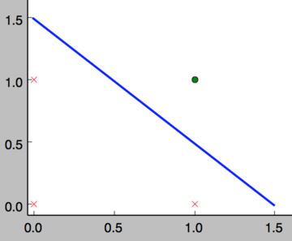
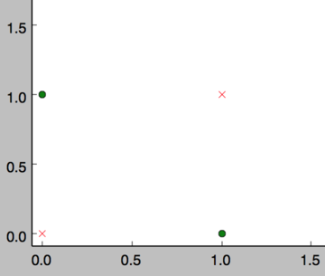
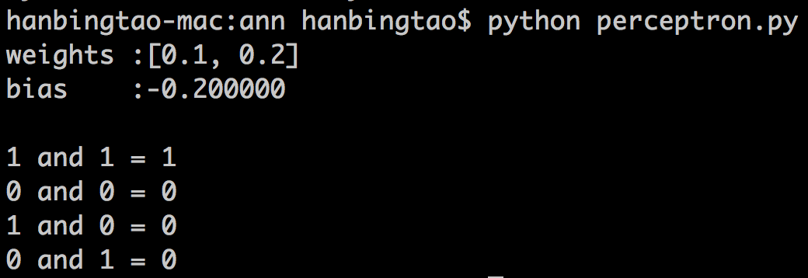

在人工智能领域，有一个方法叫机器学习。在机器学习这个方法里，有一类算法叫神经网络。神经网络如下图所示：
上图中每个圆圈都是一个神经元，每条线表示神经元之间的连接。我们可以看到，上面的神经元被分成了多层，层与层之间的神经元有连接，而层内之间的神经元没有连接。最左边的层叫做输入层，这层负责接收输入数据；最右边的层叫输出层，我们可以从这层获取神经网络输出数据。输入层和输出层之间的层叫做隐藏层。
隐藏层比较多（大于2）的神经网络叫做深度神经网络。而深度学习，就是使用深层架构（比如，深度神经网络）的机器学习方法。
那么深层网络和浅层网络相比有什么优势呢？简单来说深层网络能够表达力更强。事实上，一个仅有一个隐藏层的神经网络就能拟合任何一个函数，但是它需要很多很多的神经元。而深层网络用少得多的神经元就能拟合同样的函数。也就是为了拟合一个函数，要么使用一个浅而宽的网络，要么使用一个深而窄的网络。而后者往往更节约资源。
深层网络也有劣势，就是它不太容易训练。简单的说，你需要大量的数据，很多的技巧才能训练好一个深层网络。这是个手艺活。
看到这里，如果你还是一头雾水，那也是很正常的。为了理解神经网络，我们应该先理解神经网络的组成单元——神经元。神经元也叫做感知器。感知器算法在上个世纪50-70年代很流行，也成功解决了很多问题。并且，感知器算法也是非常简单的。
下图是一个感知器：

可以看到，一个感知器有如下组成部分：
输入权值 一个感知器可以接收多个输入，每个输入上有一个权值，此外还有一个偏置项，就是上图中的。
激活函数 感知器的激活函数可以有很多选择，比如我们可以选择下面这个阶跃函数来作为激活函数：
如果看完上面的公式一下子就晕了，不要紧，我们用一个简单的例子来帮助理解。
and函数我们设计一个感知器，让它来实现and运算。程序员都知道，and是一个二元函数（带有两个参数和），下面是它的真值表：
| 0 | 0 | 0 |
| 0 | 1 | 0 |
| 1 | 0 | 0 |
| 1 | 1 | 1 |
为了计算方便，我们用0表示false，用1表示true。这没什么难理解的，对于C语言程序员来说，这是天经地义的。
我们令，而激活函数就是前面写出来的阶跃函数，这时，感知器就相当于and函数。不明白？我们验算一下：
输入上面真值表的第一行，即，那么根据公式(1)，计算输出：
or函数同样，我们也可以用感知器来实现or运算。仅仅需要把偏置项的值设置为-0.3就可以了。我们验算一下，下面是or运算的真值表：
| 0 | 0 | 0 |
| 0 | 1 | 1 |
| 1 | 0 | 1 |
| 1 | 1 | 1 |
我们来验算第二行，这时的输入是，带入公式(1)：
也就是当时，为1，即or真值表第二行。读者可以自行验证其它行。
事实上，感知器不仅仅能实现简单的布尔运算。它可以拟合任何的线性函数，任何线性分类或线性回归问题都可以用感知器来解决。前面的布尔运算可以看作是二分类问题，即给定一个输入，输出0（属于分类0）或1（属于分类1）。如下面所示，and运算是一个线性分类问题，即可以用一条直线把分类0（false，红叉表示）和分类1（true，绿点表示）分开。

然而，感知器却不能实现异或运算，如下图所示，异或运算不是线性的，你无法用一条直线把分类0和分类1分开。

现在，你可能困惑前面的权重项和偏置项的值是如何获得的呢？这就要用到感知器训练算法：将权重项和偏置项初始化为0，然后，利用下面的感知器规则迭代的修改和，直到训练完成。
其中:
是与输入对应的权重项，是偏置项。事实上，可以把看作是值永远为1的输入所对应的权重。是训练样本的实际值，一般称之为label。而是感知器的输出值，它是根据公式(1)计算得出。是一个称为学习速率的常数，其作用是控制每一步调整权的幅度。
每次从训练数据中取出一个样本的输入向量，使用感知器计算其输出，再根据上面的规则来调整权重。每处理一个样本就调整一次权重。经过多轮迭代后（即全部的训练数据被反复处理多轮），就可以训练出感知器的权重，使之实现目标函数。
完整代码请参考GitHub: https://github.com/hanbt/learn_dl/blob/master/perceptron.py (python2.7)
对于程序员来说，没有什么比亲自动手实现学得更快了，而且，很多时候一行代码抵得上千言万语。接下来我们就将实现一个感知器。
下面是一些说明：
下面是感知器类的实现，非常简单。去掉注释只有27行，而且还包括为了美观（每行不超过60个字符）而增加的很多换行。
class Perceptron(object):def __init__(self, input_num, activator):'''初始化感知器，设置输入参数的个数，以及激活函数。激活函数的类型为double -> double'''self.activator = activator# 权重向量初始化为0self.weights = [0.0 for _ in range(input_num)]# 偏置项初始化为0self.bias = 0.0def __str__(self):'''打印学习到的权重、偏置项'''return 'weights\t:%s\nbias\t:%f\n' % (self.weights, self.bias)def predict(self, input_vec):'''输入向量，输出感知器的计算结果'''# 把input_vec[x1,x2,x3...]和weights[w1,w2,w3,...]打包在一起# 变成[(x1,w1),(x2,w2),(x3,w3),...]# 然后利用map函数计算[x1*w1, x2*w2, x3*w3]# 最后利用reduce求和return self.activator(reduce(lambda a, b: a + b,map(lambda (x, w): x * w,zip(input_vec, self.weights)), 0.0) + self.bias)def train(self, input_vecs, labels, iteration, rate):'''输入训练数据：一组向量、与每个向量对应的label；以及训练轮数、学习率'''for i in range(iteration):self._one_iteration(input_vecs, labels, rate)def _one_iteration(self, input_vecs, labels, rate):'''一次迭代，把所有的训练数据过一遍'''# 把输入和输出打包在一起，成为样本的列表[(input_vec, label), ...]# 而每个训练样本是(input_vec, label)samples = zip(input_vecs, labels)# 对每个样本，按照感知器规则更新权重for (input_vec, label) in samples:# 计算感知器在当前权重下的输出output = self.predict(input_vec)# 更新权重self._update_weights(input_vec, output, label, rate)def _update_weights(self, input_vec, output, label, rate):'''按照感知器规则更新权重'''# 把input_vec[x1,x2,x3,...]和weights[w1,w2,w3,...]打包在一起# 变成[(x1,w1),(x2,w2),(x3,w3),...]# 然后利用感知器规则更新权重delta = label - outputself.weights = map(lambda (x, w): w + rate * delta * x,zip(input_vec, self.weights))# 更新biasself.bias += rate * delta
接下来，我们利用这个感知器类去实现and函数。
def f(x):'''定义激活函数f'''return 1 if x > 0 else 0def get_training_dataset():'''基于and真值表构建训练数据'''# 构建训练数据# 输入向量列表input_vecs = [[1,1], [0,0], [1,0], [0,1]]# 期望的输出列表，注意要与输入一一对应# [1,1] -> 1, [0,0] -> 0, [1,0] -> 0, [0,1] -> 0labels = [1, 0, 0, 0]return input_vecs, labelsdef train_and_perceptron():'''使用and真值表训练感知器'''# 创建感知器，输入参数个数为2（因为and是二元函数），激活函数为fp = Perceptron(2, f)# 训练，迭代10轮, 学习速率为0.1input_vecs, labels = get_training_dataset()p.train(input_vecs, labels, 10, 0.1)#返回训练好的感知器return pif __name__ == '__main__':# 训练and感知器and_perception = train_and_perceptron()# 打印训练获得的权重print and_perception# 测试print '1 and 1 = %d' % and_perception.predict([1, 1])print '0 and 0 = %d' % and_perception.predict([0, 0])print '1 and 0 = %d' % and_perception.predict([1, 0])print '0 and 1 = %d' % and_perception.predict([0, 1])
将上述程序保存为perceptron.py文件，通过命令行执行这个程序，其运行结果为：

神奇吧！感知器竟然完全实现了and函数。读者可以尝试一下利用感知器实现其它函数。
终于看（写）到小结了...，大家都累了。对于零基础的你来说，走到这里应该已经很烧脑了吧。没关系，休息一下。值得高兴的是，你终于已经走出了深度学习入门的第一步，这是巨大的进步；坏消息是，这仅仅是最简单的部分，后面还有无数艰难险阻等着你。不过，你学的困难往往意味着别人学的也困难，掌握一门高门槛的技艺，进可糊口退可装逼，是很值得的。
下一篇文章，我们将讨论另外一种感知器：线性单元，并由此引出一种可能是最最重要的优化算法：梯度下降算法。